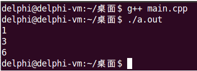

C++可以在函数声明时为参数提供一个默认值，若函数调用时没有提供参数的值，则使用默认值。
函数参数的默认值只能在函数声明中指定，在函数定义时不能再出现默认值，否则编译器会报错。
//函数声明时指定参数默认值
void func(int x = 0);
//函数定义时不能再指定参数默认值
void func(int x)
{
}
int main()
{
func(); // func(0)
return 0;
}函数默认参数的规则
#include <stdio.h>
int add(int x, int y = 0, int z = 0);
int add(int x, int y, int z)
{
return x + y + z;
}
int main(int argc, char *argv[])
{
printf("%d\n", add(1)); // x = 1, y = 0, z = 0
printf("%d\n", add(1, 2)); // x = 1, y = 2, z = 0
printf("%d\n", add(1, 2, 3)); // x = 1, y = 2, z = 3
return 0;
}
在C++中可以为函数提供占位参数
int func(int x, int)
{
return x;
}
//......
func(1, 2); // ok!C++中函数占位参数的意义：占位参数与默认参数结合起来使用，兼容C语言程序中可能出现的不规范写法。
示例1：C语言不规范写法
#include <stdio.h>
/*
* 在C语言中，该函数可以接受任意个数、任意类型的参数,
* void func(void)才表示不接受任何参数.
*/
void func()
{
}
int main()
{
func(1);
func(2, 3);
return 0;
}示例2：结合使用占位参数和默认参数，以最小的改动，将示例1代码移植到C++中
#include <stdio.h>
void func(int x, int = 0);
void func(int x, int)
{
}
int main()
{
func(1);
func(2, 3);
return 0;
}